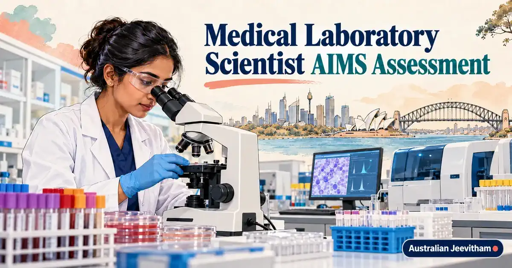

Medical Laboratory Scientist AIMS assessment ഗൈഡ്Medical Laboratory Scientist (AIMS Assessment)
BSc MLT, MSc MLT അല്ലെങ്കിൽ related laboratory qualification ഉള്ളവർ degree title മാത്രം നോക്കി outcome കരുതരുത്. AIMS assesses the qualification content, laboratory disciplines and relevant evidence for the nominated occupation. Some applicants may need the professional examination after documentary assessment.
By Binu Vadakkedath
Published and last updated: September 2026 · Verify current requirements with the linked official authorities

The assessment differs for Medical Laboratory Scientist and Medical Laboratory Technician. ശരിയായ ANZSCO occupation തിരഞ്ഞെടുക്കുന്നതാണ് ആദ്യ ഘട്ടം.
- MLS 234611
- MLT 311213
- Document Review
- AIMS Exam
- Migration Assessment
This guide is general information, not migration, legal, education, employment or financial advice. Rules, fees, occupation lists and assessment processes can change. Verify your circumstances with the official authority and use a registered migration agent or qualified professional where personal advice is required. തീരുമാനം എടുക്കുന്നതിന് മുമ്പ് official website-ലെ ഏറ്റവും പുതിയ വിവരങ്ങൾ പരിശോധിക്കുക.
1. Occupations assessed by AIMS
AIMS is the migration assessing authority for Medical Laboratory Scientist (ANZSCO 234611) and Medical Laboratory Technician (ANZSCO 311213). Choose the occupation that matches your qualification level, training and duties rather than the job title printed by one employer.
2. Stage 1 documentary assessment
AIMS-accredited Australian programs and other qualifications are assessed under the applicable current criteria. Applicants with non-accredited qualifications undergo detailed documentary assessment. The outcome depends on academic content, laboratory training and other required evidence.
Transcript മാത്രം മതിയാകാതിരിക്കാൻ സാധ്യതയുണ്ട്. Subject syllabus, practical content, internship or clinical training details എന്നിവ university-ൽ നിന്ന് നേരത്തെ ശേഖരിക്കുക.
3. Professional examination
Where the documentary assessment makes an applicant eligible for the professional examination, the exam covers seven disciplines: Anatomical Pathology, Chemical Pathology, Genomic Pathology, Haematology, Immunopathology, Medical Microbiology and Transfusion Science.
Do not assume every overseas BSc MLT graduate automatically sits the exam. AIMS first assesses the individual application against its guidelines.
AIMS Assessment Details for 2026
To pass the Australian Institute of Medical and Clinical Scientists (AIMS) assessment, your portfolio must strictly adhere to the guidelines. The professional exam covers a broad range of pathology disciplines, so plan your preparation carefully using the official AIMS study guide.
Processing Times & Fees
AIMS currently aims to complete assessments within 16 weeks, although document verification may take up to six months. Fees for the assessment and examination are regularly updated, so check the AIMS website. Ensure all your laboratory experience is backed by verifiable employer references and detailed duty statements.
4. Documents and English evidence
Prepare identity documents, degree certificates, full transcripts, subject information, employment evidence and compliant translations. Follow AIMS instructions for certification and direct institutional documents where required.
AIMS updated its guidelines in March 2026 and directs applicants to Home Affairs for current English-test scores. Read the latest guidelines rather than relying on old score tables copied online.
5. Assessment versus employment
An AIMS migration assessment supports visa processes. It does not guarantee a visa or a laboratory job. Employers may separately assess local experience, technical competence, safety training and role-specific requirements.
Official sources and current checks
ഈ ലേഖനത്തിലെ പ്രധാന വിവരങ്ങൾ പരിശോധിക്കാൻ താഴെയുള്ള official links ഉപയോഗിക്കുക. Fees, processing times, eligibility എന്നിവ മാറാം.
Frequently asked questions
Does every overseas BSc MLT graduate have to sit the AIMS exam?
No. AIMS first completes the documentary assessment. Examination eligibility depends on the individual qualification and current assessment criteria.
Which occupations does AIMS assess for migration?
AIMS assesses Medical Laboratory Scientist, ANZSCO 234611, and Medical Laboratory Technician, ANZSCO 311213.
What subjects are in the AIMS professional examination?
The seven areas are Anatomical Pathology, Chemical Pathology, Genomic Pathology, Haematology, Immunopathology, Medical Microbiology and Transfusion Science.
Does a positive AIMS assessment guarantee a visa or job?
No. Visa eligibility and employer recruitment are separate from the skills assessment.
Skills assessments, settlement & life after PR

Superannuation Guide
12% SG rate, Payday Super, EPF/PF comparison, choosing and consolidating funds, and DASP for eligible former temporary residents.
- 12% SG Rate
- EPF vs Super
- DASP

Renting Your First Home
Rental applications, inspections, state-specific bond rules, condition reports, and tenancy resources for new arrivals.
- Bond Rules
- Inspections
- Tenant Rights

AHPRA & APC Pharmacist Registration
Knowledge Stream, OPRA exam, CAOP, 1,575-hour supervised practice, English requirements, and visa options for Kerala pharmacists.
- OPRA Exam
- 1,575 hrs Practice
- Healthcare